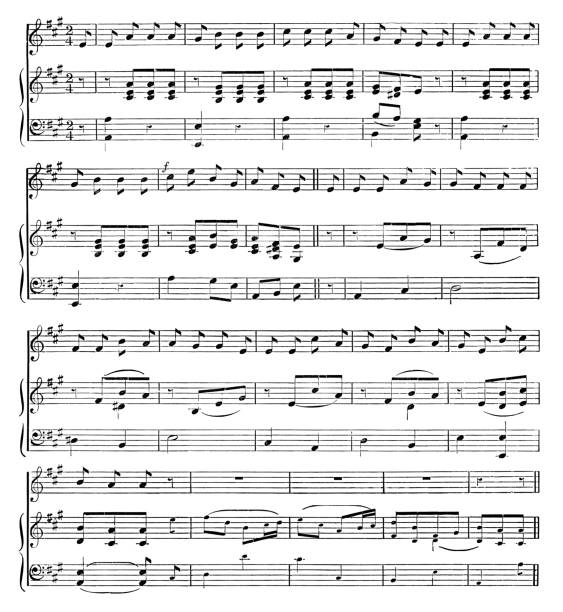

Where is the beat?
December 9, 2024
To Y., for celebrating one step closer towards Death
Where is the beat?
the beat
the beat
the beat
the beat
the beat
the beat
the beat
It comes back
again, and again
Distressing
Disturbing
Intriguing
Exciting
Breathtaking
Enchanting
Refreshing
Relaxing
one,
two
three
four,
five,
six,
seven and
eight.
You know them all
the beat of pain
the beat of sadness
the beat of stress
the beat of desire
the beat of love
the beat of joy
the beat of calm
the beat of sleep.
And I can share mine with you
and we can share the same together
sometimes
when we dance,
we doubt,
we laugh,
we kiss,
we rest.
And I will keep asking
where is the beat?
That second half of you:
will I ever get it?
· · ·
Context & Notes
"Where is the beat?" A recurrent question that has initially been the source of many laughs with Y. when dancing together. So easy for him to catch it instantaneously on any songs, so much harder for me to hear it and align my steps to it. But then, the beat goes beyond dancing and accompanies every step of life...
Comments
If this poem stirred something in you, share a thought below.